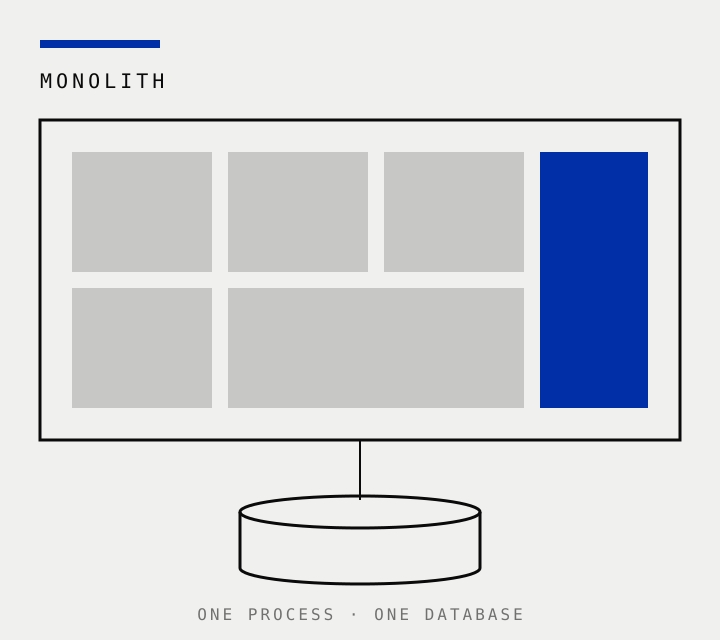
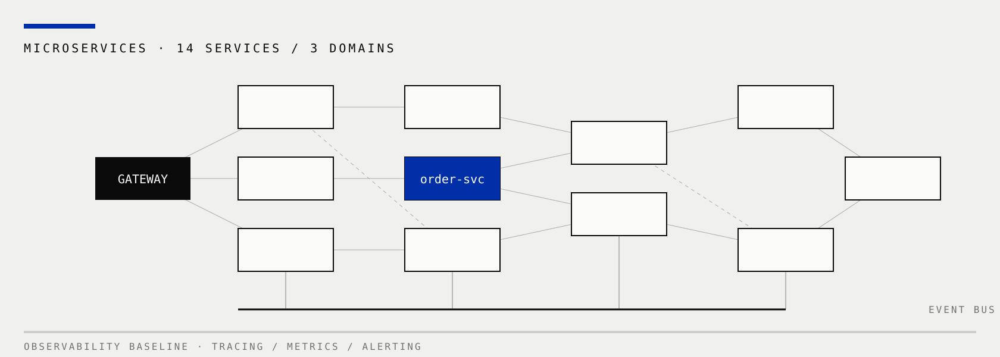

TECH SHARE · 2026
一次架构演进的真实记录：决策、代价与收获
ARCHITECTURE EVOLUTION · 2023—2025
01 · ORIGIN
2023 年初，我们只有一个仓库、一个进程、一个数据库。十个人的团队，需求随时在变，单体让我们两周一次发版、当天回滚，几乎没有沟通成本。
回头看，问题从来不是"该不该用单体"，而是"什么时候该承认它已经装不下我们了"。

02 · TIMELINE
2023
按业务域梳理模块依赖，用半年画出第一张领域地图，谨慎地拆出 2 个服务。
2024
核心交易链路完成拆分，服务数从 3 涨到 11，也踩进了分布式事务的坑。
2025
补齐可观测性与降级预案，拆分节奏放缓，重心从"拆"转向"养"。
THREE PHASES · ONE DIRECTION
03 · RESULTS
发布周期
2 小时
原为 14 天 · 全量回归自动化后，随提随发
14 个
独立部署的服务 · 原为 1 个
15 分钟
故障平均恢复时间 · 原为 4 小时
04 · BOUNDARY
order-service/
├── api/ 对外契约：HTTP + 事件，版本化管理
├── domain/ 领域模型：不 import 任何框架
├── infra/ 适配层：数据库、消息队列、缓存
└── main.go 唯一入口：独立部署、独立发版
边界不是画在架构图上的线
是它能不能独立编译、独立部署、独立失败。三条里少任何一条，都只是"换了目录结构的单体"。
我们把这条标准写进代码评审清单，挡住了一半拍脑袋的拆分冲动。
BOUNDARY = INDEPENDENT BUILD · DEPLOY · FAILURE
05 · LESSONS
01
共享库不拆，服务拆分只是换了部署方式的单体，故障照样一损俱损。
02
链路追踪与告警的建设要跑在服务数量前面，否则每次故障都是全员猜谜。
03
服务边界最终长成了组织架构的样子——调整团队，比调整代码更有效。
06 · LANDSCAPE

十四个服务，三条业务域，一套统一的可观测性底座。这张图每季度重画一次——画不出来的依赖，就是该治理的信号。
07 · CLOSING
三年后我们依然在路上：下一步是单元化与多活。唯一确定的，是"现在"永远比"完美"重要。
THANKS · Q&A